Graphic Design
Teaching myself the digital side of product design, one class graphic at a time
For most of my training as a mechanical product designer, I'd poured my energy into the technical side — CAD, 3D printing, machine fabrication, prototyping. But watching where product design was actually heading, I realized the kind of work I wanted to do would need the digital half too: visual design, storyboarding, wireframing. So I set out to deliberately build those muscles in Photoshop, Illustrator, and Figma — not in the abstract, but by doing real work for real deadlines.
How it worked
I became the go-to graphic designer for two MIT mechanical engineering classes — Toy Product Design (2.00B) and Product Engineering Processes (2.009). Staff would reach me on Slack whenever they needed an extra set of hands, and I'd design to their specs, mostly in Photoshop and Illustrator. The work ended up all over both classes: stage props, student team presentations, the class website, lecture material, and the big final product-launch presentations.
What I learned
Every piece started from scratch — sketching new directions, playing with color palettes, and staying organized through layers. Working to someone else's brief on a real timeline taught me the craft faster than any tutorial could: how to take a loose request and turn it into something polished, how to iterate against feedback, and how visual design carries just as much of a product's story as the engineering behind it. It's the reason I now think of myself as living where engineering and design meet, rather than on one side of that line.
Design gallery
A selection of graphics I designed for the two classes — all made from scratch in Photoshop and Illustrator.
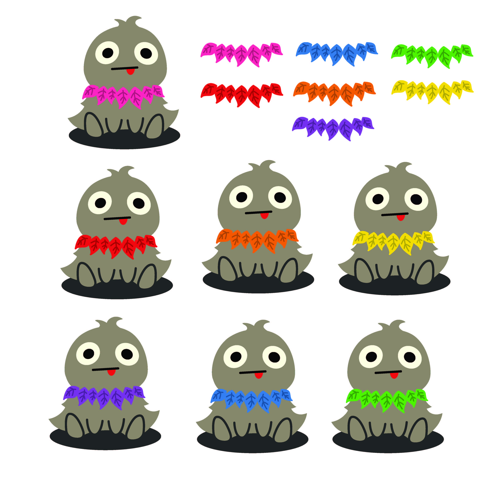

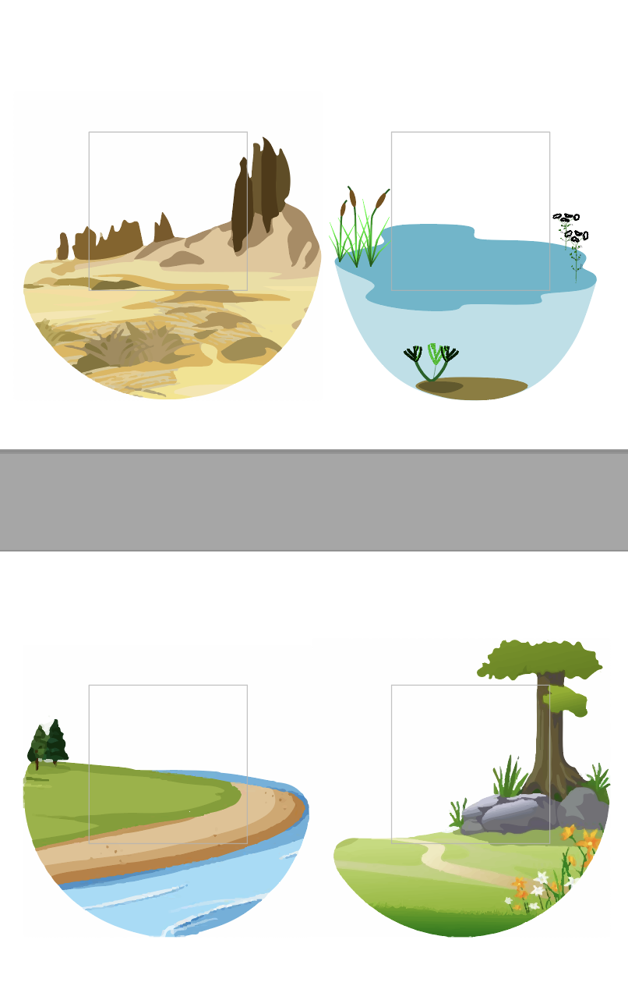
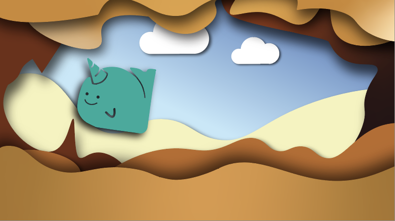
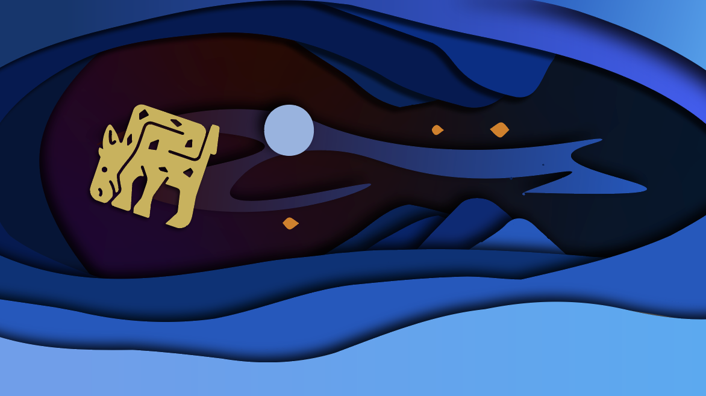
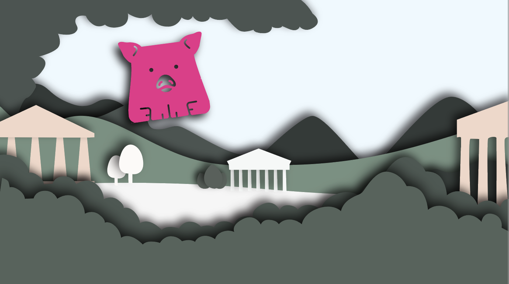
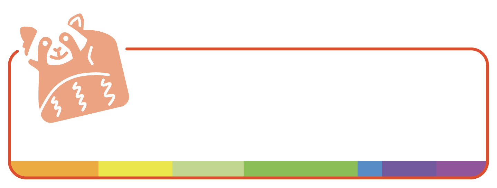
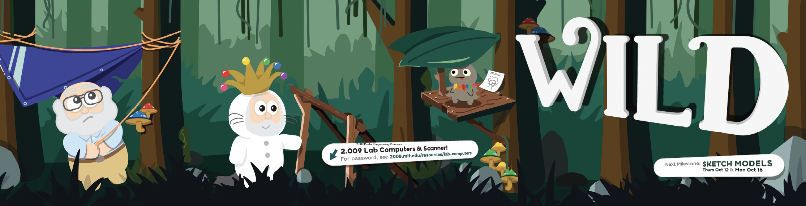
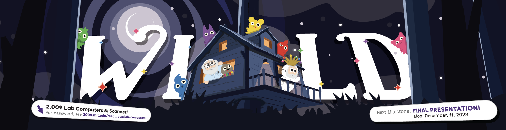
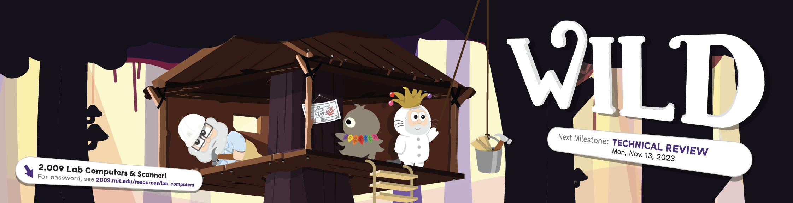
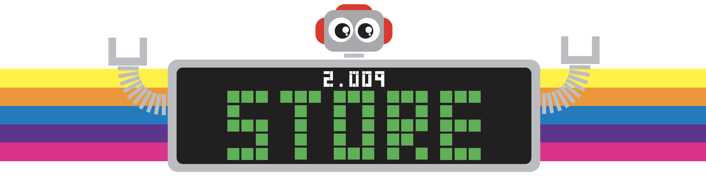
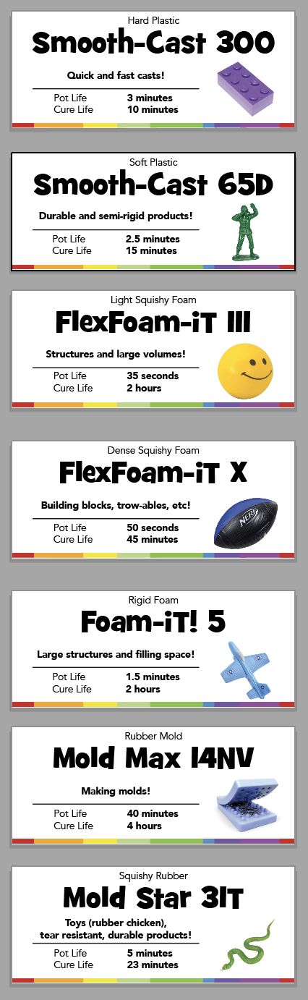
Reflection
This project looks small next to a device or a venture, but it changed how I work. I went in knowing I had a gap, and I closed it the only way that ever really works — by doing the work, on real deadlines, for people who needed it to be good. That willingness to walk toward a weakness and turn it into a strength is something I carry into every new thing I take on.